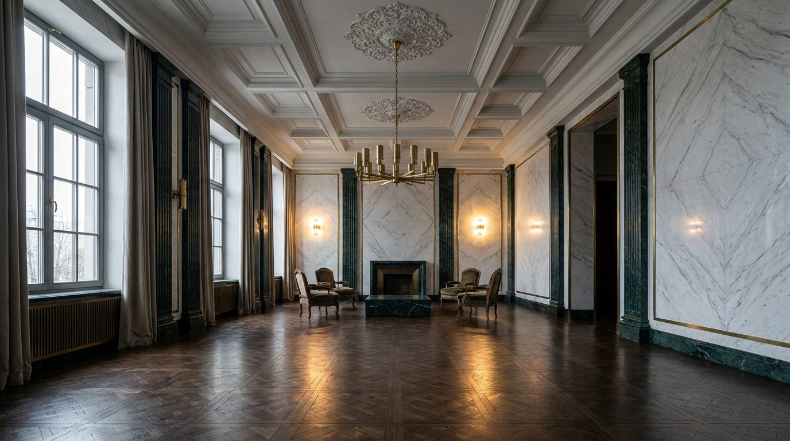

Atlante · INT-RU-01 · Russia · Russia
Appartamento di rappresentanza in classicismo contemporaneo, marmo book-matched e soffitto a lacunari
Esempi · esterno e interno


Perché funziona
Loud per scala e materia: 4,2 m di altezza, marmo lucido book-matched e pilastri verdi con capitelli in ottone brunito. La saturazione resta bassa e il porfido è confinato al velluto, così la scenografia non diventa kitsch.
Architettura · elementi riproducibili
- soffitto 4,2 m a lacunari 1200x1200 mm con rosetta in stucco e cornice 400 mm
- pannelli in marmo bianco lucido book-matched 1500x3000 mm, giunti 2 mm
- pilastri in marmo verde con capitelli in ottone brunito, luce 900 mm
- parquet a Versailles in rovere, moduli 600x600 mm, soglie in ottone
- porta doppia a due battenti 3000 mm in rovere tinto con specchiatura
- finestre alte 3200 mm con profilo a due ante e tende in velluto a tutta altezza
- un divano lungo 3000 mm in lana avorio e un tavolo monolito in marmo: nessun altro arredo
Fatto verificato: lo stalinismo architettonico usa marmo, granito e bronzo per interni palaziali, e la stazione Mayakovskaya (1938, Dushkin) ne è la prova più leggibile: colonne in acciaio inox e rodonite rosa, pareti in marmo bianco Ufaley e diorite, pavimento a disegno bianco e rosa.
Valutazione: il registro è loud per scala e lucentezza; per non scivolare nel kitsch si tiene un solo marmo book-matched per parete e si esclude ogni finto dorato.
Variante San Pietroburgo: stesso impianto con proporzioni neoclassiche più strette, pareti in giallo pallido e bianco, colonnato e volta a lacunari come alla Cattedrale di Kazan (Voronikhin, compiuta nel 1811, colonnato su cortile interno di circa 1600 mq); marmo bianco e ottone brunito restano, il porfido si riduce a un dettaglio.
Luce
Prompt di generazione (EN)
Representative apartment living room in Moscow, contemporary classical register, 4.2 m ceiling with a 1200 x 1200 mm coffered plaster ceiling, 400 mm cornice and central rosette, book-matched polished white Ufaley marble panels 1500 x 3000 mm on the walls with 2 mm joints, dark green marble pilasters 900 mm wide with burnished brass capitals, Versailles oak parquet in 600 x 600 mm modules and brass thresholds, 3000 mm double doors in stained oak, tall 3200 mm north windows giving soft cool raking light at 25 degrees, one 3000 mm ivory wool sofa and a monolithic marble table only, 28 mm lens at 1.3 m height, two-point perspective with parallel verticals, no people, no text, no chandelier glare.